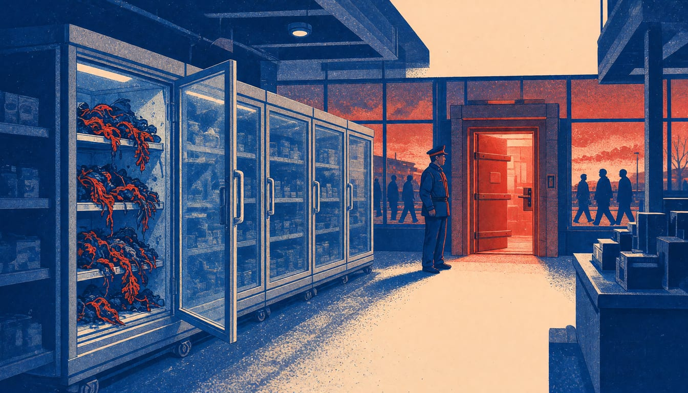

Opinion
Europe guards its ministries and leaves its food to hackers
The state intercepted 3.5 million malicious emails for the foreign ministry while supermarkets were broken into through open doors the government itself named. We pay twice, in spoiled food and in fear.

Italy's own government said after the attacks on supermarkets in Italy that the businesses hit were mostly still running obsolete security systems, with interfaces exposed directly on the internet. On 2 November, hackers raised the temperature in refrigeration systems at dozens of supermarkets in Sicily and Tuscany, and in shops across Belgium, Luxembourg, Ireland, the Netherlands, Estonia, Finland and Sweden. The food spoiled. Then came the promises of unity. Antonio Tajani, Italy's foreign minister, looks east and says exact responsibilities must still be established before Italy reacts diplomatically and politically; the open door was named in his own government's statement.
What the attackers found tells you who paid for security where Europe buys its dinner. Giovanni Arena, president of the Decò group, said the attacks came through the call centres that handle remote monitoring of refrigeration systems. Giuseppe Spadaro, director general of Gruppo Radenza, which runs Coop supermarkets in Sicily, said hackers had found some of the company's vulnerable devices and that the company was still trying to understand why they were insecure. The statement after the 3 November meeting at Palazzo Chigi, the prime minister's office, put the flaw in their authentication mechanisms. More than 20 shops were hit in Italy alone, between Palermo, Catania, Ragusa and Trapani.
What we still pay runs past the cold shelves. The NoName hackers put the personal data of Tajani's wife and children on the dark web and told him they know where his family lives, and prosecutors in Rome have opened an investigation into it. And the answer of the national cyber security agency, the ACN, to Italian large-scale retail businesses after the attacks was an invitation to check their own IT systems and their connections with the firms they use. Meanwhile the foreign ministry's own Cyber Room, working since January, intercepted more than 630,000 malicious events and neutralised about 3.5 million malicious emails aimed at the ministry's digital perimeter. That is what protection looks like when the state decides a network matters. Tajani himself says stolen data touches each of our daily lives and that protecting it is a battle for freedom. The fridges that feed us are still waiting for that decision.
The government's answer was sanctions and a diplomatic response. Tajani distinguished between pro-Russian hackers being behind the attacks and a foreign country directing them. The food spoiled either way. A sanction needs a culprit proven after the fact; a closed door protects the food before it. The balance, so far, is written in the kilos of frozen food thrown away after an attack at 4am.
The corrected bill is this: the EU and its member states fund, by common borrowing and never by cuts, a European cyber-resilience service that takes direct charge of the security of essential-service networks, food logistics, energy and health, with a rule that no common money reaches a retailer or utility that keeps its internet-facing systems private and unsecured. Resilience must become a pillar of European defence, as the EU's own analysts at the EUISS have argued, and ownership of the essential connections, not a fine on whoever is breached, is the cure. The bill goes to the governments that meet in Brussels, and they decide whether the fridges are defended by Europe or left to the cheapest private bidder again.